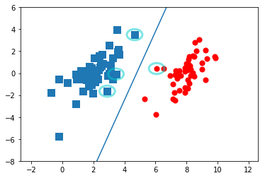

软间隔最大化
对于线性不可分的数据集，通常情况是会有一些outliers(离群点)，将这些outliers去掉，剩下的大部分样本就是线性可分的了。实际上我们是引入松弛变量来达到这一效果
软间隔的支持向量在间隔边界上，或者在间隔边界与分离超平面之间，或者在分离超平面误分一侧
合页损失函数最优化问题可以转化为原始最优化问题
非线性支持向量和核函数
利用非线性变换将非线性问题转化为线性问题
所谓的kernel trick(核技巧)就是通过一个非线性变换将输入空间(欧式空间)变换到一个特征空间(希尔伯特空间)，使得在输入空间中的超曲面模型对应于特征空间中的超平面模型
核技巧的想法是在学习和预测中只定义核函数 \(\ K(x,z) \ \) 而不显式的定义映射函数\( \ \phi \ \)，因为通常直接计算 \(\ K(x,z) \ \) 比较容易而通过映射函数计算并不容易。在支持向量机中，就是如此，只需要定义一个核函数，而核函数的选择往往依赖于特定领域知识，需要通过实验来验证其有效性
不是所有的函数都能作为核函数，我们通常所说的核函数都是正定核，常用的核函数有：
- 多项式核函数
- 高斯核函数
- 字符串核函数（应用于文本分类，信息检索等方面）
SMO算法
将大优化问题分解成多个小优化问题来求解，这些小问题往往很容易求解，并且对它们顺序求解的结果与作为整体求解的结果完全一致，在计算结果完全相同的同时，SMO算法的求解时间短很多
简化版SMO处理小数据集
简化版跳过外循环确定要优化的最佳alpha对，先在数据集上遍历每个alpha，然后在剩下的alpha集合中随机选择另一个alpha,从而建立alpha对
import numpy as npdef loadDataSet(file):
dataMat = []
labelMat = []
with open(file) as f:
for line in f.readlines():
lineArr = line.strip().split('\t')
dataMat.append([float(lineArr[0]),float(lineArr[1])])
labelMat.append([float(lineArr[2])])
return dataMat, labelMatdataMat, labelMat = loadDataSet('testSet.txt')需要构造一个可以在某个区间范围内随机选择一个整数的函数，也需要一个可以在调节alpha在大于H或小于L的alpha值
#两个输入参数,i是第一个alpha的下标，m是所有alpha的数目
def selectJrand(i,m):
j = i
while(j == i):
j = int(np.random.uniform(0,m))
return jdef clipAlpha(aj, H, L):
if aj > H:
aj = H
if L > aj:
aj = L
return ajdef smoSimple(dataMat, labelMat, C, epsilon, maxIter):
dataMatrix = np.mat(dataMat)
labelMatrix = np.mat(labelMat)
b = 0
m, n = np.shape(dataMatrix)
alphas = np.mat(np.zeros((m,1)))
iter = 0
while (iter < maxIter):
alphaPairsChanged = 0 #它用来记录alpha是否已经变化
for i in range(m):
gXi = np.multiply(alphas,labelMatrix).T * dataMatrix * dataMatrix[i,:].T + b
Ei = gXi - labelMatrix[i]
if (labelMatrix[i] * Ei < -epsilon and alphas[i] < C) or (labelMatrix[i] * Ei > epsilon and alphas[i] > 0):
j = selectJrand(i, m)
gXj = np.multiply(alphas,labelMatrix).T * dataMatrix * dataMatrix[j,:].T + b
Ej = gXj - labelMatrix[j]
alphaIold = alphas[i].copy()
alphaJold = alphas[j].copy()
#确定L 和 H
if (labelMatrix[i] != labelMatrix[j]):
L = max(0, alphas[j] - alphas[i])
H = min(C, C + alphas[j] - alphas[i])
else:
L = max(0, alphas[j] + alphas[i] - C)
H = min(C, alphas[j] + alphas[i])
if L == H:
print('L==H')
continue
eta = dataMatrix[i,:] * dataMatrix[i,:].T + dataMatrix[j,:] * dataMatrix[j,:].T - \
2 * dataMatrix[i,:] * dataMatrix[j,:].T
if eta <= 0:
print('eta<=0')
continue
#更新alphaI, alphaJ
alphas[j] += labelMatrix[j] * (Ei - Ej)/eta
alphas[j] = clipAlpha(alphas[j], H, L)
if (abs(alphas[j] - alphaJold) < 0.00001):
print('j not moving enough')
continue
alphas[i] += labelMatrix[i] * labelMatrix[j] * (alphaJold - alphas[j])
#更新b值
b1 = b - Ei - labelMatrix[i] * (alphas[i] - alphaIold) * dataMatrix[i,:] * dataMatrix[i,:].T - \
labelMatrix[j] * (alphas[j] - alphaJold) * dataMatrix[i,:] * dataMatrix[j,:].T
b2 = b - Ej - labelMatrix[i] * (alphas[i] - alphaIold) * dataMatrix[i,:] * dataMatrix[j,:].T - \
labelMatrix[j] * (alphas[j] - alphaJold) * dataMatrix[j,:] * dataMatrix[j,:].T
if (0 < alphas[i] and C > alphas[i]):
b = b1
elif (0 < alphas[j] and C > alphas[j]):
b = b2
else:
b = (b1 + b2)/2
alphaPairsChanged += 1
print('iter: %d i: %d, pairs changed %d' % (iter, i, alphaPairsChanged))
if (alphaPairsChanged == 0 ):
iter += 1
else:
iter = 0
print('iteration number: %d' % iter)
return b, alphasb, alphas = smoSimple(dataMat, labelMat, 0.6, 0.001, 40)bmatrix([[-3.82001263]])alphas[alphas>0]matrix([[0.05961168, 0.29567198, 0.07904323, 0.27624043]])weights = 0
for i in range(100):
if alphas[i] > 1e-10:
print(dataMat[i], labelMat[i])
weights += alphas[i] * labelMat[i] * np.array(dataMat[i])[4.658191, 3.507396] [-1.0]
[3.457096, -0.082216] [-1.0]
[5.286862, -2.358286] [1.0]
[6.080573, 0.418886] [1.0]import matplotlib.pyplot as pltb = b[0,0]
w0 = weights[0,0]
w1 = weights[0,1]
x1 = np.arange(-2, 12, 0.1)
x2 = (-b - w0 * x1)/w1xcoord0 = []
ycoord0 = []
xcoord1 = []
ycoord1 = []
for i in range(100):
label = labelMat[i][0]
if (label == -1):
xcoord0.append(dataMat[i][0])
ycoord0.append(dataMat[i][1])
else:
xcoord1.append(dataMat[i][0])
ycoord1.append(dataMat[i][1])from matplotlib.patches import Circlefig = plt.figure()
ax = plt.subplot(111)
ax.set_ylim(-8,6)
circle = Circle((4.658191, 3.507396), 0.5, facecolor='none', edgecolor=(0,0.8,0.8), linewidth=3, alpha=0.5)
ax.add_patch(circle)
circle = Circle((3.45709, -0.082216), 0.5, facecolor='none', edgecolor=(0,0.8,0.8), linewidth=3, alpha=0.5)
ax.add_patch(circle)
circle = Circle((6.08057, 0.418885), 0.5, facecolor='none', edgecolor=(0,0.8,0.8), linewidth=3, alpha=0.5)
ax.add_patch(circle)
circle = Circle((2.893743, -1.643468), 0.5, facecolor='none', edgecolor=(0,0.8,0.8), linewidth=3, alpha=0.5)
ax.add_patch(circle)
ax.scatter(xcoord0,ycoord0, marker='s', s=90)
ax.scatter(xcoord1,ycoord1, marker='o', s=50, c='red')
ax.plot(x1,x2)
plt.show()
上面简化版SMO其实存在提升速度的方法，因为我们内循环的alphaj完全就是随机选择的，这样非常耗时，而Platt的完整版选择似的Ei-Ej最大的那个alphaj,这样就大大加快了速度，完整版SMO之后再实现